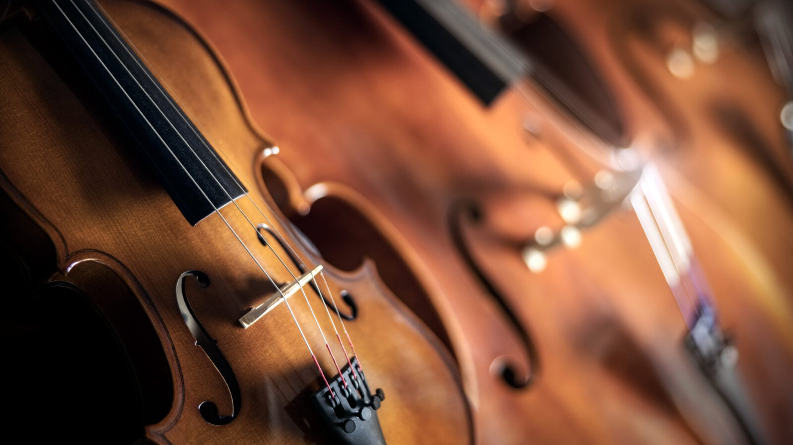
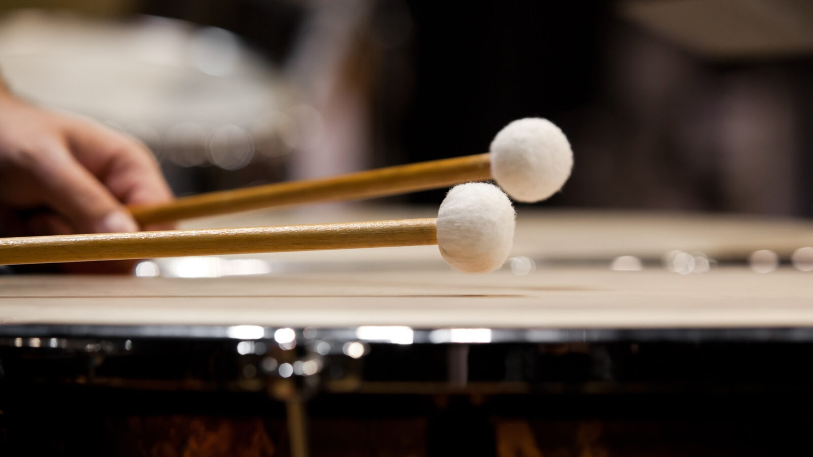

Sonos
Your online instrumentarium
| C0-B0 | C1-B1 | C2-B2 | C3-B3 | C4-B4 | C5-B5 | C6-B6 | C7-B7 | ||
|---|---|---|---|---|---|---|---|---|---|
| strings | violin | ||||||||
| viola | |||||||||
| violoncello | |||||||||
| bass | |||||||||
| guitar | |||||||||
| bassguitar | |||||||||
| piano | |||||||||
| winds | piccolo | ||||||||
| flute | |||||||||
| clarinet | |||||||||
| bassoon | |||||||||
| trumpet | |||||||||
| trombone | |||||||||
| tuba | |||||||||
| perc. | timpani | ||||||||
| xylophone | |||||||||
| marimba | |||||||||
7 Steps to Start Your Music Journey
- Discover your musical interests (classical, rock, jazz, etc.)
- Consider your budget for instruments and lessons
- Choose an instrument category
- Strings (violin, guitar)
- Winds (flute, trumpet)
- Percussion (drums, xylophone)
- Try out several instruments in person
- Think about physical requirements (size, strength)
- Find a qualified teacher
- Begin with regular practice
Strings
Strings, or chordophones, represent a diverse family of instruments that produce sound through the vibration of stretched strings. Whether played with a horsehair bow like the violin and cello, plucked by hand like the harp and guitar, or struck by hammers as seen in the piano, these instruments are known for their expressive range and lyrical qualities. They form the emotional backbone of the classical orchestra and are equally essential in modern folk, rock, and jazz, offering everything from soaring melodic lines to rich, rhythmic harmonies.

List of String Instruments
- bowed strings
- plucked strings
- struck strings
Violin
The smallest and highest-pitched member of the string family, the violin is celebrated for its bright, singing tone. It is a versatile lead instrument, essential in both classical orchestras and various folk traditions worldwide.
Viola
Often mistaken for the violin, the viola is slightly larger and produces a deeper, mellower sound. It provides a rich harmonic middle voice in string ensembles, bridging the gap between the high violins and the lower cellos.
Violoncello
Commonly known as the cello, this instrument is played seated and is beloved for its deep, soulful resonance that closely mimics the range of the human voice. It serves as both a powerful melodic soloist and a foundational bass element.
Bass
Also called the double bass or upright bass, it is the largest and lowest-pitched bowed string instrument. Its massive body creates the deep, thumping vibrations that provide the rhythmic and harmonic floor for orchestras and jazz bands alike.
Guitar
A popular fretted instrument that can be acoustic or electric, the guitar produces sound by plucking or strumming six strings. Its portability and wide range of styles—from classical to heavy metal—make it one of the most iconic instruments in modern music.
Bassguitar
Unlike the upright bass, the bass guitar is held horizontally and usually features four thick strings. It is the rhythmic anchor of modern bands, working closely with the drums to drive the groove and provide the low-end punch in rock, pop, and funk.
Piano
A monumental keyboard instrument that produces sound by striking metal strings with felt-covered hammers. Its vast range—covering over seven octaves—and ability to play both delicate melodies and complex chords simultaneously make it the ultimate tool for composition and a centerpiece of both solo and orchestral music.
Winds
Winds, scientifically known as aerophones, generate sound by vibrating a column of air within a resonator. This broad category is traditionally divided into woodwinds, which often use a wooden reed or a shaped edge to split the air (like flutes, clarinets, and saxophones), and brass instruments, where the player’s lips vibrate against a metal mouthpiece (such as trumpets and trombones). Winds are celebrated for their breath-like phrasing and can produce a massive spectrum of textures, from the delicate, airy trills of a piccolo to the powerful, triumphant roar of a tuba.
List of Wind Instruments
Piccolo
The highest-pitched member of the wind family, the piccolo is a half-sized flute. Its piercing, brilliant sound can be heard even over a full orchestra, often used to add sparkle to marches and triumphant melodies.
Flute
A reedless instrument that produces a silvery, airy tone by blowing air across an opening. Known for its incredible agility, it is often used for fast, bird-like trills and elegant solo passages.
Clarinet
This versatile single-reed instrument is famous for its wide dynamic range and rich, woody timbre. It can shift effortlessly from dark, mellow low notes to bright, singing high tones.
Bassoon
The "clown of the orchestra" is a large double-reed instrument with a distinctive, deep buzzing sound. It provides both a sturdy bass foundation and a unique, often humorous, melodic character.
Trumpet
The leader of the brass section, the trumpet has a powerful, metallic sound that commands attention. It is a staple in everything from classical fanfares to energetic jazz solos.
Trombone
Unique for its telescoping slide, the trombone allows the player to glide smoothly between notes. It produces a bold, heroic sound that can range from a soft velvet texture to a thunderous roar.
Tuba
The largest and lowest-pitched brass instrument, the tuba serves as the anchor of the entire band. It provides a deep, resonant floor of sound that supports the harmony of the whole ensemble.
Percussions
Percussions comprise the world's oldest and most varied instrument family, encompassing anything that is struck, shaken, or scraped to create sound. This group includes membranophones like drums, where a stretched skin vibrates, and idiophones like xylophones or cymbals, where the entire body of the instrument resonates. Beyond simply keeping the beat, percussion instruments provide the "heartbeat" and color of a musical piece, ranging from the subtle shimmer of a triangle to the earth-shaking resonance of a timpani or a modern drum kit.

List of Percussion Instruments
Timpani
Also known as kettle drums, these large, tunable copper drums are played with mallets. They provide a powerful, thunderous pulse that reinforces the bass line and adds dramatic tension to orchestral climaxes.
Xylophone
A melodic percussion instrument consisting of wooden bars struck with hard mallets. It produces a bright, sharp, and "dry" tone that is perfect for fast, rhythmic passages and cutting through a dense musical mix.
Marimba
Similar in appearance to the xylophone but larger and deeper in tone, the marimba features wooden bars and metal resonators. It is known for its warm, mellow, and resonant sound, often used for beautiful solo performances.
Drum Kit
A centerpiece of modern music, the drum kit is a collection of drums and cymbals played by a single musician. It combines various textures-from the deep thud of the bass drum to the metallic shimmer of the cymbals-to drive the groove.
Bongos
An iconic pair of small, open-bottomed drums of different sizes. Played primarily with the hands, they produce high-pitched, crisp rhythmic patterns that are essential to Latin and Afro-Cuban music.